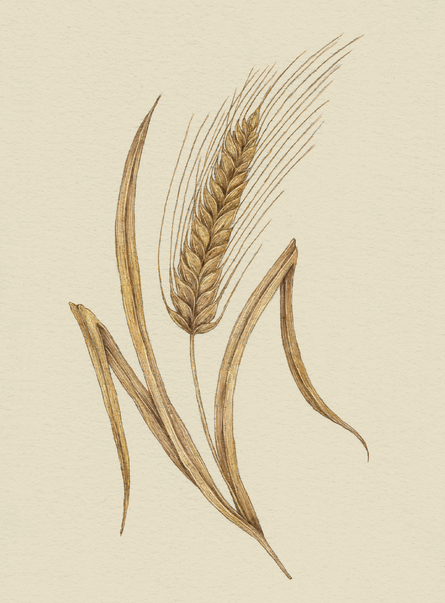

The Language of Flowers
Wheat

Wheat
Triticum
Victoria's Definition: Prosperity
Meaning
- Riches
- Abundance
Origin
Thick stalks of golden wheat have long been associated with riches and abundance. In ancient times,
large stores of wheat signified wealth, and a bountiful wheat harvest was synonymous with prosperity
in the coming year.
Pair With
- Clover for good luck in a new venture
- Begonia to repay a favor